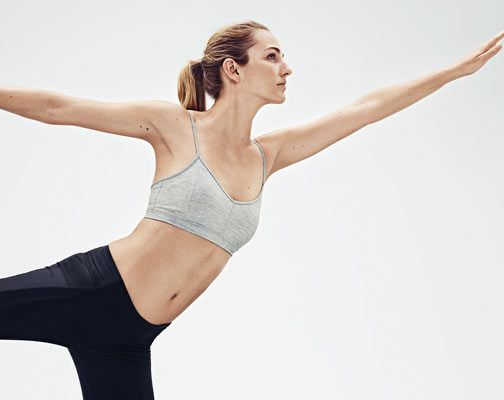

| | | | | | | | |
Among other benefits of having a personal trainer is trainer’s ability to integrate a lot of different sports in to your work out. Tight hip flexors? We will solve it by integrating a bunch of yoga poses! Looking for tighter abs? Pilates comes into play. Dreaming of running a marathon? We can be your running buddies! Recovering from an injury? You just have to have a trainer to help you through the recovery!
|  | style=space |  |
| | | |